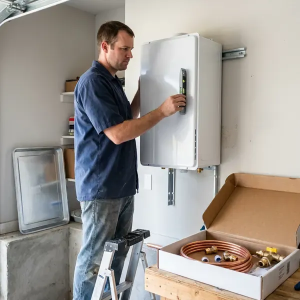

Electric Tankless Water Heater Installation in Huntersville, NC
No tank, no vent, no gas line. Electric tankless installation in Huntersville, NC.
- Upfront Pricing
- Code Approved
- Insured Plumbers
- Fast Installs

Ready for Endless Hot Water in Huntersville, NC?
Sizing comes from your fixtures and water temperature.
Electric Tankless Water Heater Installation in Huntersville, NC
HFN Plumbing handles electric tankless installs for homeowners in Huntersville, NC, panel review to final test. We size by the coldest incoming water you will see and the number of fixtures that run at once, then coordinate any new circuits with a licensed electrician. Sized right, it keeps up.
Work we handle every week:
- Isolation valves for descaling
- Point-of-use units for bathrooms, kitchens and guest suites
- Correct sizing and placement

Additional Plumbing Installation Services in Huntersville, NC
We install water heaters, pumps, lines, and fixtures across Huntersville, NC with precision workmanship that meets every local code.


Customers
Why Choose HFN Plumbing for Electric Tankless Water Heater Installation in Huntersville, NC?
Picking HFN Plumbing means working with plumbers who size electric tankless every week. We know the demands of local homes and water, from cold incoming temperatures in winter to hard water that scales up heating elements. Experience shows in the sizing.
- Endless Hot Water, No tank to run dry, even with two showers going, as long as it is sized right.
- Steady Supply, Hot water keeps coming during peak use, good for homes with several bathrooms.
- Small Footprint, These units free up space in tight utility areas.
Citywide Coverage
Homes, condos and guest suites throughout Huntersville are regular work for us. These units fit in garages and closets easily.
Experienced Team
Licensed plumbers on our team have handled many electric tankless projects. Flow, amperage and sizing are second nature.
Safety-First Approach
We install pressure relief where required and follow local plumbing code. Every install is tested for temperature and flow before we leave.
Trusted Certified Huntersville Plumbing Services Professionals
At HFN Plumbing, we are proud to offer certified plumbing services throughout Huntersville, NC. Credentials matter in this trade. Every repair, install and maintenance visit follows strict safety and quality rules, and the plumbers doing the work carry recognized industry credentials.
Call Us Now PHCC Plumbing Contractor Recognition
PHCC Plumbing Contractor Recognition Better Business Bureau (BBB) Accreditation
Better Business Bureau (BBB) Accreditation Angi Certified Pro
Angi Certified Pro ISO 9001 Quality Management Certification
ISO 9001 Quality Management CertificationElectric Tankless Installation Services in Huntersville, NC
Converting from Tank to Electric Tankless in Huntersville, NC
Converting a tank to electric tankless frees floor space and ends standby loss. The old tank comes out, the new unit goes on the wall and the lines get rerouted, with new circuits run by an electrician. Plan on one day. It looks tidier.

Commercial Electric Tankless Water Heater Installation in Huntersville
Commercial electric tankless fits handwash sinks, break rooms and small offices well. Many businesses use point-of-use units at each sink instead of one central tank, which cuts piping runs and meets handwash temperature rules without a large heater. Code sets the temperature. Installs can happen after close.
Electric Tankless for Guest Suites and Additions in Huntersville, NC
Guest suites, detached studios and additions often sit far from the main water heater. Long hot lines waste water and heat, so a nearby electric tankless is often the better choice. Sizing matches the fixtures. No vent needed.
Whole-Home Electric Tankless Systems in Huntersville, NC
Whole-home coverage in Huntersville, NC means one unit big enough for your busiest hour. Sizing uses peak fixtures and the coldest water, and sometimes two smaller units beat one big one. Temperature holds steady. We plan it before quoting.
Rheem Electric Tankless Water Heater Installation in Huntersville
Rheem's RTEX line covers most of the whole-home electric tankless units we install. The RTEX-18 runs on two 40 amp breakers, while the RTEX-24 and RTEX-27 need three, so we match the model to your panel before ordering. Wall mounting is simple. We connect water, set temperature and test for leaks.
Electric Tankless Water Heater Upgrades in Huntersville, NC
Upgrading from a 50 gallon electric tank to tankless is mostly an electrical project. The old tank ran on a single 30 amp circuit, and the new unit may need two or three 40 amp circuits, which is where most of the time and cost go. The water side is simple. We remove and dispose of the old tank.
Electrical Panel Review and Upgrades in Huntersville
Before any electric tankless install, we look hard at the panel. Whole-home units can need 100 to 150 amps on their own, so we check the service size, open breaker slots and existing load to see whether the house can carry it. Older panels often fall short. We bring in an electrician when needed.

Point-of-Use Electric Tankless Installation in Huntersville
A guest bath or a far kitchen sink can take a minute to get hot water from the main heater. Installing a small unit at the fixture gives hot water in seconds and wastes less water. They mount under cabinets. Small circuits are usually enough.
Electric Tankless Water Heater Installation Near Me in Huntersville, NC
Picking a local company for electric tankless means the plumber knows local code and inspectors. Plumbing and electrical permits get scheduled together to keep the job short. Most work is referrals.
Need electric tankless water heater installation near me? We look at the house, size the unit to your panel and fixtures and get you on the calendar fast, often that same week. Installs move quickly.
HFN Plumbing at a Glance
- Licensed and insured plumbers serving Huntersville, NC
- 24/7 emergency service with same-day scheduling
- Clear written estimates, no hidden fees
- 4.8-star rated by 840+ North Carolina customers
Huntersville Map
Huntersville Information
- Population
- 64,688
- Area codes
- 704/980/336
- Service area
- Huntersville and towns within a 40 mile drive
- Nearby
- Mooresville, Concord, Kannapolis, Charlotte
An electric tankless heater heats water only while it flows, so a Huntersville, NC home loses no heat to a standing tank.
Talk to a Plumber
Call HFN Plumbing for reliable plumbing work done by licensed pros in Huntersville, NC.
Our Specialized Plumbing Services in Huntersville, NC
At HFN Plumbing, we handle the full list of plumbing services across Huntersville, NC. We go from leak detection all the way to full system installations, for homes and commercial buildings, and we do it quickly at a fair price. Take a look at our core services below:


How We Install Electric Tankless in Huntersville, NC
Sizing and wiring are checked first.
Request a Quote
Call us at (980) 364-4317 to set up a visit. We talk through your hot water needs and check your electrical and water setup.
Site Assessment
A plumber visits your Huntersville home, confirms electrical capacity and pressure and chooses a location for the unit.
Installation
We handle the install, including any electrical work, plumbing and testing, all to local code.
Frequently Asked Questions About Electric Tankless Water Heater Installation in Huntersville
Point-of-use units usually cost $500 to $1,500 installed. Whole-home units run $1,500 to $4,500, plus $2,000 to $4,000 if the panel needs an upgrade.
Size depends on your fixtures, your incoming water temperature and your peak demand. We work it out on site and size for the coldest month.
Most electric tankless installs require plumbing and electrical permits. We handle permits and schedule inspections.
Whole-home units can require 100 amps or more, so many homes need a panel review. Upgrades are coordinated if needed.
Yes, periodic descaling and inlet screen cleaning keep them running well. A water softener can cut down on maintenance needs.
Coverage varies by brand, often 5 to 7 years on heating elements and longer on other parts. We also stand behind our installation work.
Swinging water temperature, error codes and reduced flow are common signs. Scale is usually behind it.
Our crews install Stiebel Eltron, Rheem, EcoSmart and Bosch. We recommend based on flow needs and panel capacity.
Hear From Customers Who Hired Our Plumbing Experts

Mark T.
The floor drain in our office break room backed up every few weeks. The plumber ran a cable, then put a camera down and found roots at a joint about thirty feet out. Seeing it on the screen made the decision easy.
Drain Cleaning · Huntersville, NC
Laura S.
Our 40 gallon tank started leaking from the bottom after thirteen years. The tech hauled the old one out, set a new unit with a fresh expansion tank, and had hot water running in about four hours. He took the old tank with him too.
Water Heater Replacement · Concord, NC
James P.
Our restaurant had a slow leak at the hand sink that was rotting the cabinet base. HFN Plumbing came in at six in the morning before prep, replaced the trap and both supply lines, and was packed up before my first cook clocked in.
Commercial Plumbing · Kannapolis, NC
Lisa C.
Water was pouring out from under the washing machine on a holiday weekend. HFN Plumbing talked me through closing the valves over the phone and had a plumber at the house within ninety minutes. It was a burst fill hose.
Emergency Plumbing · Charlotte, NC
Diane F.
My kitchen faucet had dripped for months and I finally got tired of hearing it at night. HFN Plumbing came out the next morning, replaced the cartridge and the O rings, and tightened a loose base that was letting water under the sink.
Faucet Repair · Charlotte, NCMarcus H.
Grease from the fryer line kept clogging the kitchen drain at my diner. HFN Plumbing hydro jetted the line after closing, showed me the buildup on camera, and set us up on a quarterly cleaning so it does not catch us on a Friday again.
Drain Cleaning · Kannapolis, NC